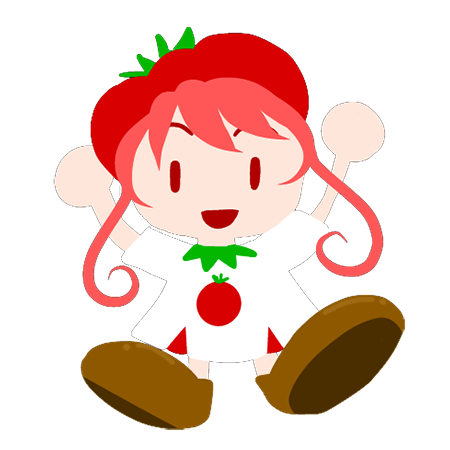

<ons-page id="result-page">
    <ons-toolbar>
        <div class="left"><ons-back-button>戻る</ons-back-button></div>
        <div class="center">結果だよ</div>
    </ons-toolbar>

    <div style="text-align: center" id="PageRes">

        <h2>お勧めのジュースは</h2>
        <div id="recipititle"></div>
        

        <ons-button id="all_recipi"
            onclick="myNavigator.pushPage('page3.html')">
            レシピ
        </ons-button>
<!--        <ons-button
            onclick="myNavigator.popPage()">
          戻る
        </ons-button>
--!
    </div>
</ons-page>
